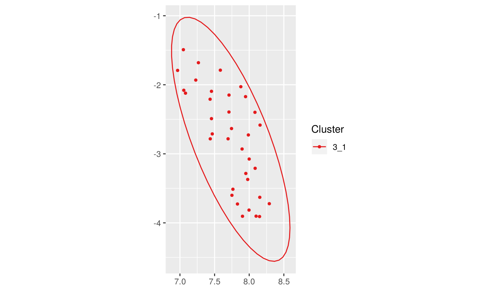

Get cluster membership for each observation of an umapscan object
Source:R/clustering.R
get_clusters_membership.RdThe clusters taken into account are all the "leaves" of the object
clusters tree. If a parent is specified, only the leaves of its
subtree are taken.
get_clusters_membership( us, parent = "", max_level, noise_inherit_parent = FALSE )
Arguments
| us | umapscan object to describe clusters |
|---|---|
| parent | name of the parent cluster |
| max_level | get membership at most this level deep |
| noise_inherit_parent | if TRUE, 'Noise' points are given their parent cluster membership |
See also
Examples
library(dplyr) iris_num <- iris %>% select_if(is.numeric) us <- new_umapscan(iris_num, n_neighbors = 25, min_dist = 0.1, seed = 1337) us <- compute_clusters(us, minPts = 3, eps = 0.5)get_clusters_membership(us)#> [1] "1" "1" "1" "1" "1" "1" "1" #> [8] "1" "1" "1" "1" "1" "1" "1" #> [15] "1" "1" "1" "1" "1" "1" "1" #> [22] "1" "1" "1" "1" "1" "1" "1" #> [29] "1" "1" "1" "1" "1" "1" "1" #> [36] "1" "1" "1" "1" "1" "1" "1" #> [43] "1" "1" "1" "1" "1" "1" "1" #> [50] "1" "2" "2" "2" "2" "2" "2" #> [57] "2" "2" "2" "2" "2" "2" "2" #> [64] "2" "2" "2" "2" "2" "2" "2" #> [71] "2" "2" "2" "2" "2" "2" "2" #> [78] "2" "2" "2" "2" "2" "2" "2" #> [85] "2" "2" "2" "2" "2" "2" "2" #> [92] "2" "2" "2" "2" "2" "2" "2" #> [99] "2" "2" "3" "2" "3" "3" "3" #> [106] "3" "2" "3" "3" "3" "3" "3" #> [113] "3" "2" "2" "3" "3" "3" "3" #> [120] "2" "3" "2" "3" "2" "3" "3" #> [127] "2" "2" "3" "3" "3" "3" "3" #> [134] "2" "<Noise>" "3" "3" "3" "2" "3" #> [141] "3" "3" "2" "3" "3" "3" "2" #> [148] "3" "3" "2"get_clusters_membership(us)#> [1] "1" "1" "1" "1" "1" "1" "1" #> [8] "1" "1" "1" "1" "1" "1" "1" #> [15] "1" "1" "1" "1" "1" "1" "1" #> [22] "1" "1" "1" "1" "1" "1" "1" #> [29] "1" "1" "1" "1" "1" "1" "1" #> [36] "1" "1" "1" "1" "1" "1" "1" #> [43] "1" "1" "1" "1" "1" "1" "1" #> [50] "1" "2" "2" "2" "2" "2" "2" #> [57] "2" "2" "2" "2" "2" "2" "2" #> [64] "2" "2" "2" "2" "2" "2" "2" #> [71] "2" "2" "2" "2" "2" "2" "2" #> [78] "2" "2" "2" "2" "2" "2" "2" #> [85] "2" "2" "2" "2" "2" "2" "2" #> [92] "2" "2" "2" "2" "2" "2" "2" #> [99] "2" "2" "3_1" "2" "3_1" "3_1" "3_1" #> [106] "3_1" "2" "3_1" "3_1" "3_1" "3_1" "3_1" #> [113] "3_1" "2" "2" "3_1" "3_1" "3_1" "3_1" #> [120] "2" "3_1" "2" "3_1" "2" "3_1" "3_1" #> [127] "2" "2" "3_1" "3_1" "3_1" "3_1" "3_1" #> [134] "2" "<Noise>" "3_1" "3_1" "3_1" "2" "3_1" #> [141] "3_1" "3_1" "2" "3_1" "3_1" "3_1" "2" #> [148] "3_1" "3_1" "2"get_clusters_membership(us, parent = "3")#> [1] NA NA NA NA NA NA NA NA NA NA NA NA #> [13] NA NA NA NA NA NA NA NA NA NA NA NA #> [25] NA NA NA NA NA NA NA NA NA NA NA NA #> [37] NA NA NA NA NA NA NA NA NA NA NA NA #> [49] NA NA NA NA NA NA NA NA NA NA NA NA #> [61] NA NA NA NA NA NA NA NA NA NA NA NA #> [73] NA NA NA NA NA NA NA NA NA NA NA NA #> [85] NA NA NA NA NA NA NA NA NA NA NA NA #> [97] NA NA NA NA "3_1" NA "3_1" "3_1" "3_1" "3_1" NA "3_1" #> [109] "3_1" "3_1" "3_1" "3_1" "3_1" NA NA "3_1" "3_1" "3_1" "3_1" NA #> [121] "3_1" NA "3_1" NA "3_1" "3_1" NA NA "3_1" "3_1" "3_1" "3_1" #> [133] "3_1" NA NA "3_1" "3_1" "3_1" NA "3_1" "3_1" "3_1" NA "3_1" #> [145] "3_1" "3_1" NA "3_1" "3_1" NA